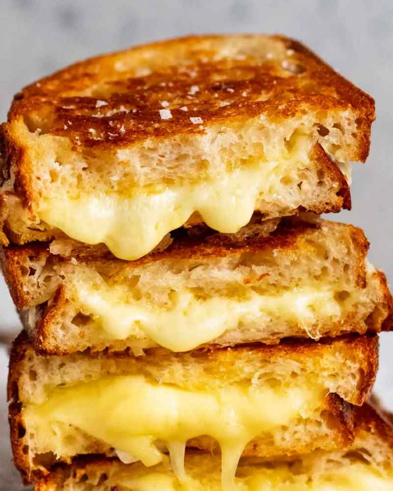

Grilled Cheese Sandwhich

An at home treat for breakfast, lunch or dinner
I realise it might seem strange to share a recipe for what is fundamentally just melted cheese
between bread. And really, is there even such a thing as a bad grilled cheese? Perhaps not.
Ingredients
- 2 slices sourdough bread
- 30g/ 2 tbsp SALTED butter
- 1/3 cup (heaped) vintage cheddar cheese or gruyere
- 30g/ 1/3 cup mozzarella
Step-By-Step Instructions
- Butter bread - Slather both sides of each piece of bread with the butter (yes, all 4 sides!).
- Light toast - Heat a heavy-based skillet or frying pan over medium low heat (no oil or butter).
Place both pieces of bread in the skillet and lightly toast for 1 minute to warm it through and
create a light crust. (When we flip, this gives the cheese a head start).
- Pile on cheese - Flip one slice of bread, then pile on the cheddar cheese followed by the mozzarella.
Place the other slice of bread on top, with the hot toasted side in contact with the cheese.
- Cook 3 minutes - Cook for 3 minutes or until the bread is evenly golden and crisp,
pressing down lightly with a spatula every now and then. If it's browning
too quickly, remove remove from the stove to cool down a bit and lower heat.
- Flip, 3 minutes - Turn the sandwich over, and cook the other side for
3 minutes or until the bread is golden and the cheese is melted.
- Devour - Transfer to cutting board. Cut in half in one swift motion. Admire cheese pull. Devour.